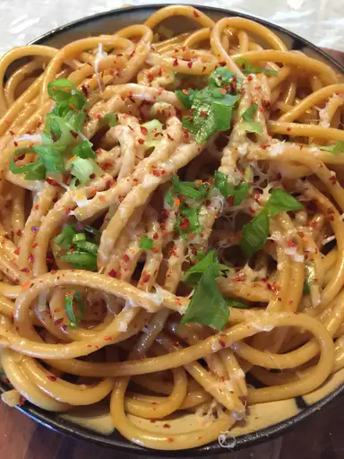

Kawach Noodles

Description
A special twist on the usual indomie noodles as cooked by my dear mother.
Ingredients
- Indomie noodles
- Sossi soya chunks
- Water
- Oil
- Tomatoes
- Onions
- Grated cheese
Steps
- Boil the sossi chunks in a pan
- Boil the indomie noodles in a separate pan
- Fry the onions and tomatoes in a pan
- Add the sossi chunks and indomie noodles
- Serve hot with the grated cheese on top